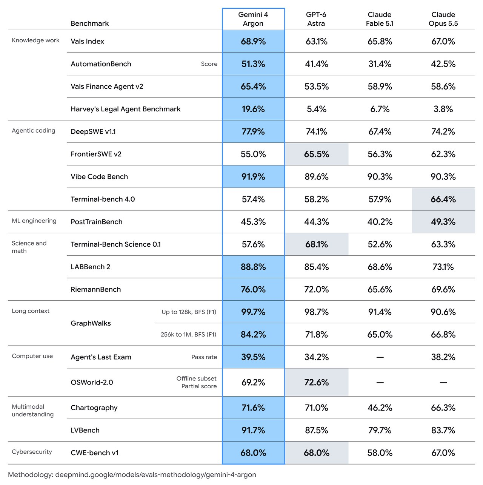

02 Google 게시일 2026.09.30
100만 토큰 Argon, 구글이 배포 예고

구글이 Gemini 4 Argon을 공개했다. Gemini 4 Argon은 복잡한 장기 업무를 오래 이어 가도록 만든 모델이다. 코딩, 금융 조사, 법률 초안, 보안 취약점 대응처럼 여러 단계를 거치는 일을 겨냥했다. 구글은 먼저 신뢰된 보안 방어 조직에 배포하고, 이후 개발자와 기업, 일반 사용자로 범위를 넓힐 계획이다.
핵심 브리핑
Gemini 4 Argon은 긴 맥락을 유지하며 여러 단계를 거치는 업무를 처리하는 모델이다. 구글은 이 모델이 실제 소프트웨어 개발, 기업 지식 업무, 사이버 보안 방어에 맞춰졌다고 밝혔다.
- 출력 한도는 100만 토큰Token — 모델이 글을 처리할 때 쪼개는 기본 단위이다. 이전 6만 4000토큰에서 늘었다.
- 가격은 입력 100만 토큰당 2달러다.
- 출력 가격은 100만 토큰당 10달러다.
- 캐시된 입력은 입력 가격에서 95% 할인한다.
- 현재는 Fairwind Program을 통해 신뢰된 보안 방어 조직에 먼저 배포한다.
구글은 공개 전 모델 접근 절차에 맞춰 미국 정부의 사전 접근 프로그램에도 참여하고 있다. 구글은 초기 사용자의 피드백을 받아 가드레일을 다듬은 뒤, 개발자와 기업, 일반 사용자로 공개 범위를 넓히겠다고 밝혔다.
구글 내부에서는 이미 이 모델을 업무에 쓰고 있다. 구글은 수천 명의 직원이 전문 코딩 작업, 심층 조사, 글쓰기 품질에서 강점을 확인했다고 설명했다. 양자 알고리즘 최적화 사례에서는 공개된 기준선보다 40% 더 나은 결과를 몇 분 만에 냈다.
데이터센터 메모리 최적화 사례도 공개했다. Argon 에이전트는 운영 데이터 분석으로 메모리 최적화를 찾고 적용했으며, 구글은 전체 배포 시점 기준으로 300TiB 이상 메모리를 확보했고 총 절감량은 500TiB에서 1PiB로 추정했다.
코드 마이그레이션 사례도 제시했다. 구글은 re2, libgav1, Fuchsia Zircon kernel 같은 코드베이스를 C·C++에서 Rust로 옮기는 작업에 Argon 에이전트를 쓰고 있다고 밝혔다. libgav1 사례에서는 SIMD 코드 3만 2000줄을 안전한 Rust로 바꿨고, 영상 출력은 같았으며 Rust 포트보다 2.7배 빨랐다.

주요 트렌드
이번 발표에서 가장 눈에 띄는 변화는 모델 성능보다 배포 방식이다. 구글은 널리 공개하기보다 보안 방어 조직과 내부 업무에 먼저 적용했다. 프론티어 모델을 곧바로 넓게 푸는 대신, 민감한 도메인부터 단계적으로 여는 흐름을 분명히 했다.
가격도 함께 제시했다. 입력 100만 토큰당 2달러는 긴 문서를 많이 읽히는 업무에 유리하다. 출력은 100만 토큰당 10달러라서, 길게 쓰는 작업은 읽기보다 비용 부담이 더 크다.
벤치마크 메시지도 기업 업무에 맞춰졌다. 구글은 DeepSWE v1.1에서 77.9%, AutomationBench에서 51.3%, LVBench에서 91.7%를 제시했다. 코딩, 업무 자동화, 긴 영상 이해를 한 모델로 묶어 판을 넓히려는 전략으로 읽힌다.
보안 분야는 예외적으로 더 강한 권한을 준다. 구글은 신뢰된 방어 조직과 자사 내부 팀에는 사이버 가드레일 없이 제공하겠다고 밝혔다. 대신 일반 공개 전에는 오용 방지, 프롬프트 인젝션Prompt Injection — 외부 문맥에 숨은 지시로 모델 동작을 틀어버리는 공격 방어, 미스얼라인먼트 감시를 더 강화하겠다고 못 박았다.
| 항목 | 수치 | 비교·의미 |
|---|---|---|
| 출력 한도 | 100만 토큰 | 이전 6만 4000토큰보다 큼 |
| 입력 가격 | 100만 토큰당 2달러 | 긴 문서 입력 비용 기준 |
| 출력 가격 | 100만 토큰당 10달러 | 생성량이 많을수록 비용 부담 큼 |
| DeepSWE v1.1 | 77.9% | 장기 소프트웨어 작업 성능 |
| AutomationBench | 51.3% | 핵심 업무 기능 종단 실행 |
| LVBench | 91.7% | 긴 영상 이해 성능 |
업계의 움직임
Wiz는 이미 Scan for Good 프로그램에서 Argon을 보안 방어에 쓰고 있다. 구글은 이 모델이 병원들이 쓰는 의료 소프트웨어에서 민감한 개인정보 노출 취약점을 찾아냈고, 이전 프론티어 모델이 놓친 위험을 발견했다고 밝혔다.
이번 발표는 구글 공식 블로그와 함께 다뤄졌다. 다만 경쟁사 대응이나 외부 고객의 추가 반응은 아직 공개되지 않았다.
시사점과 체크포인트
우리 회사가 먼저 볼 지점은 긴 문서 처리 비용이다. 입력은 저렴하지만 출력 단가가 더 높다. 리서치 요약, 규정 비교, 감사 문서 초안처럼 읽는 양이 많은 업무와, 장문 보고서를 대량 생성하는 업무를 나눠 봐야 한다.
보안 조직에는 별도 검토가 필요하다. 구글은 신뢰된 방어 조직에는 사이버 가드레일 없이 제공한다고 밝혔다. 취약점 점검과 패치 보조에 유용할 수 있지만, 사용 권한 통제와 감사 로그가 함께 설계돼야 한다.
검토 항목은 분명하다.
- 법무·준법감시: 외부 모델에 넣을 수 있는 문서 범위를 정리할 것
- 보안운영: 취약점 탐지 결과를 누가 검증할지 정할 것
- 개발조직: 대규모 코드 변경 시 자동·수동 검토 절차를 둘 것
- 재무기획: 입력과 출력 비중별 비용 시나리오를 따질 것
아직 확인되지 않은 점도 있다. 일반 기업 고객의 정확한 출시 시점은 공개되지 않았다. 외부 독립 평가인지, 자체 측정인지도 각 벤치마크마다 구분해 확인할 필요가 있다.
원문 정보
제목: Gemini 4 Argon
게시일: 2026.09.30
출처 URL: https://blog.google/innovation-and-ai/models-and-research/gemini-models/gemini-4-argon/